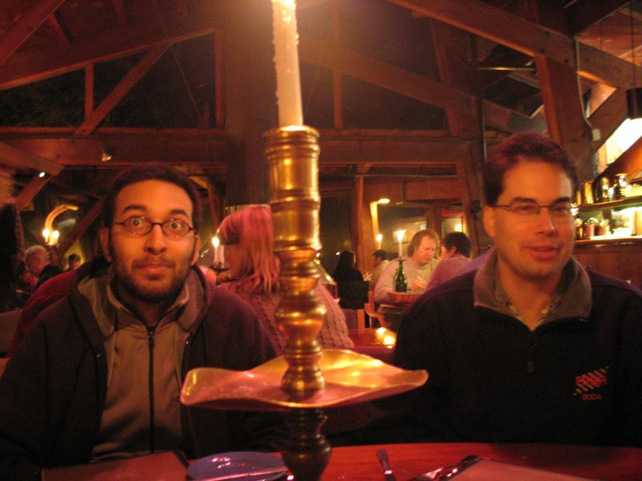

Caltech Memories -- Pasadena to Monterey is a fun one-day drive up the California coast. If we don't get into trouble over legal drivers, Andre usually takes us to Nepenthe for dinner. Overlooking the cliff, Nepenthe's beauty compensates for its averge food. I had just got a new Canon G-6 (since MIA in Philadelphia). Helia was playing around with it and caught Nick in one of his rare trance-like states. (FPGA, February 2005)
First |
Previous Picture |
Next Picture |
Last | Thumbnails
